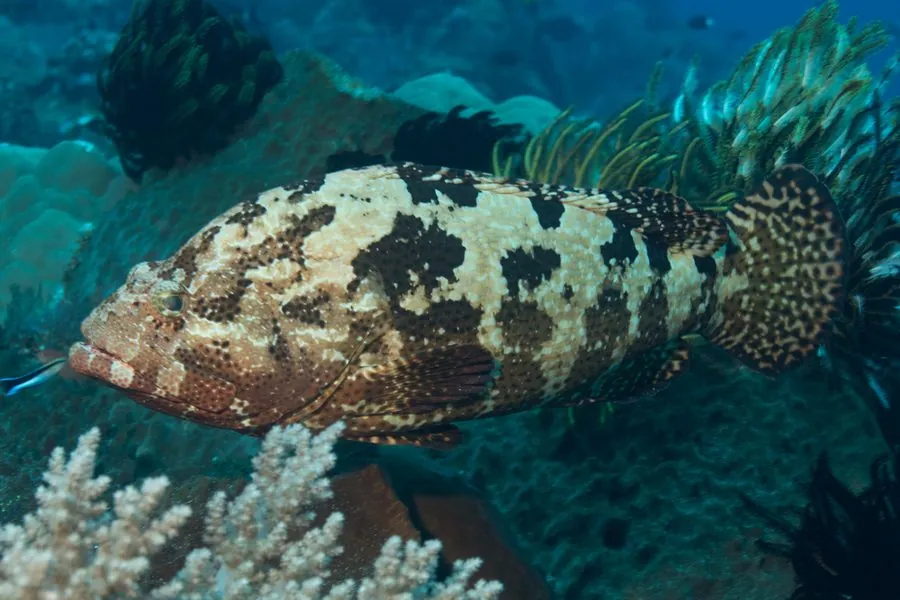

鱼类 · 动物界
棕点石斑鱼 Epinephelus fuscoguttatus

珊瑚礁区的大型石斑鱼，体表布满棕褐色斑块，肉质鲜美，是名贵海水鱼，也是“龙虎斑”杂交的亲本之一。
- 分类
- 门脊索动物门纲硬骨鱼纲目鲈形目科鮨科属石斑鱼属
- 栖息环境
- 热带珊瑚礁、岩礁和潟湖，水深 1–60 m
- 地理分布
- 印度洋—太平洋热带海域，从红海、东非到日本南部、澳大利亚北部，中国南海有分布
- 保护级别
- IUCN 易危（VU）；中国未列入国家重点保护野生动物名录
物种志
棕点石斑鱼体呈长椭圆形、侧扁，头大，口大，下颌稍向前突出。体色黄褐或棕褐色，体表布满棕褐色斑块和不规则的斑点，形似虎皮，因此俗称“老虎斑”。成鱼体长一般 40–70 cm，体重 2–8 kg，最大可超过 1.2 m、体重 20 kg 以上，是石斑鱼中体型较大的种类。
棕点石斑鱼分布于印度洋—太平洋的热带珊瑚礁海域，从红海、东非到日本南部和澳大利亚北部，中国南海有分布。它栖息于珊瑚礁、岩礁和潟湖，水深 1–60 m，是肉食性鱼类，捕食鱼类、甲壳类和头足类。石斑鱼大多是雌性先熟的雌雄同体：幼体先发育为雌性，成年后部分个体转变为雄性。棕点石斑鱼的繁殖期在夏季，亲鱼在礁区产卵。它肉质细嫩、生长快，是名贵海水养殖鱼类；“龙虎斑”就是用棕点石斑鱼作母本、鞍带石斑鱼作父本杂交培育出来的。因过度捕捞，其野生种群受到影响，IUCN 将其评为易危。
形态与习性
- 食性肉食性，捕食鱼类、甲壳类和头足类
- 体长一般 40–70 cm，最大可超过 1.2 m
- 体重常见 2–8 kg，最大可超过 20 kg
- 繁殖雌性先熟的雌雄同体，夏季在礁区产卵
- 栖息深度珊瑚礁和岩礁区，水深 1–60 m
- 养殖名贵海水养殖鱼类，是“龙虎斑”杂交的母本
趣味知识
- 老虎斑体表的棕褐色斑块像虎皮，因此得名。
- 石斑鱼大多是雌性先熟，成年后部分个体由雌性变成雄性。
- 著名的“龙虎斑”就是用棕点石斑鱼作母本杂交培育出来的。